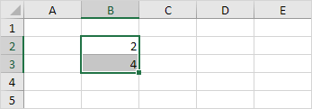
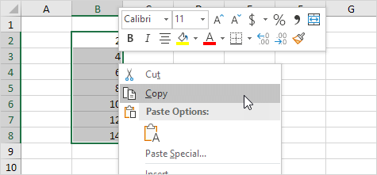

Memulai Microsoft Excel
Jika Anda seorang pemula Excel, ini adalah tempat yang tepat untuk memulai.
Microsoft Excel adalah salah satu aplikasi perangkat lunak yang paling banyak digunakan sepanjang masa. Ratusan juta orang di seluruh dunia menggunakan Microsoft Excel. Anda dapat menggunakan Excel untuk memasukkan semua jenis data dan melakukan perhitungan keuangan, matematis, atau statistik.

Panduan
Baca instruksi dan dokumentasi yang lebih mendetail tentang penggunaan Microsoft Excel.
Sel, Baris, Kolom | Contoh Range | Isi Range | Pindahkan Range | Salin/Tempel Range | Sisipkan Baris, Kolom
Sebuah Range di Excel adalah kumpulan dua atau lebih sel. Bab ini memberikan gambaran umum tentang beberapa operasi jangkauan yang sangat penting.
Sel, Baris, Kolom
Mari kita mulai dengan memilih Sel, Baris, dan Kolom.
-
Untuk memilih sel C3, klik kotak di persimpangan kolom C dan baris 3.

-
Untuk memilih kolom C, klik pada header kolom C.

-
Untuk memilih baris 3, klik header baris 3.

Contoh Range
Range adalah kumpulan dari dua atau lebih sel.
-
Untuk memilih Range B2:C4, klik sel B2 dan seret ke sel C4.

-
Untuk memilih Range sel individual, tahan Ctrl dan klik pada setiap sel yang ingin Anda sertakan dalam Range.

Isi Range
Untuk mengisi Range, jalankan langkah-langkah berikut.
-
Masukkan nilai 2 ke dalam sel B2.
-
Pilih sel B2, klik di sudut kanan bawah sel B2 dan seret ke bawah ke sel B8.

Hasil:

Teknik menyeret ini sangat penting dan Anda akan sering menggunakannya di Excel. Berikut contoh lain.
-
Masukkan nilai 2 ke dalam sel B2 dan nilai 4 ke dalam sel B3.

-
Pilih sel B2 dan sel B3, klik di sudut kanan bawah Range ini dan seret ke bawah.

Excel secara otomatis mengisi Range berdasarkan pola dua nilai pertama.
Berikut contoh lain. -
Masukkan tanggal 13/6/2016 ke dalam sel B2 dan tanggal 16/6/2016 ke dalam sel B3.

-
Pilih sel B2 dan sel B3, klik di sudut kanan bawah Range ini dan seret ke bawah.

Catatan: kunjungi halaman kami tentang IsiOtomatis untuk lebih banyak contoh.
Pindahkan Range
Untuk memindahkan Range, jalankan langkah-langkah berikut.
-
Pilih Range dan klik batas Range.

-
Seret Range ke lokasi barunya.

Copy/Paste Range
Untuk menyalin dan menempelkan Range, jalankan langkah-langkah berikut.
-
Pilih Range, klik kanan, lalu klik Salin (atau tekan Ctrl+C).

-
Pilih sel di mana Anda ingin sel pertama dari Range muncul, klik kanan, lalu klik Tempel di bawah 'Paste Options:' (atau tekan Ctrl+V).

Sisipkan Baris, Kolom
Untuk menyisipkan baris antara nilai 20 dan 40 di bawah, jalankan langkah-langkah berikut.
-
Pilih baris 3.

-
Klik kanan, lalu klik Insert.

Hasil.

Baris di bawah baris baru digeser ke bawah. Dengan cara yang sama, Anda dapat menyisipkan kolom.
Masukkan Rumus | Mengedit Rumus | Prioritas Operator | Salin/Tempel Rumus | Sisipkan Rumus
Sebuah rumus adalah ekspresi yang menghitung nilai sel. Fungsi adalah rumus yang telah ditentukan sebelumnya dan sudah tersedia di Excel.
Misalnya, sel A3 di bawah ini berisi rumus yang menambahkan nilai sel A2 ke nilai sel A1.

Misalnya, sel A3 di bawah ini berisi fungsi SUM yang menghitung jumlah range A1:A2.

Masukkan Rumus
Untuk memasukkan rumus, jalankan langkah-langkah berikut.
- Pilih sel.
- Untuk memberi tahu Excel bahwa Anda ingin memasukkan rumus, ketikkan tanda sama dengan (=).
-
Misalnya, ketikkan rumus A1+A2.
Tip: daripada mengetik A1 dan A2, cukup pilih sel A1 dan sel A2.
-
Ubah nilai sel A1 menjadi 3.

Excel secara otomatis menghitung ulang nilai sel A3. Ini adalah salah satu fitur Excel yang paling kuat!
Mengedit Rumus
Saat Anda memilih sel, Excel memperlihatkan nilai atau rumus sel di rumus bar.

-
Untuk mengedit rumus, klik di rumus bar dan ubah rumus.

-
Tekan Enter.

Prioritas Operator
Excel menggunakan urutan default di mana perhitungan terjadi. Jika bagian dari rumus ada dalam tanda kurung, bagian itu akan dihitung terlebih dahulu. Kemudian melakukan perhitungan perkalian atau pembagian. Setelah ini selesai, Excel akan menambah dan mengurangi sisa rumus Anda. Lihat contoh di bawah ini.

Pertama, Excel melakukan perkalian (A1 * A2). Selanjutnya, Excel menambahkan nilai sel A3 ke hasil ini.
Contoh lain,

Pertama, Excel menghitung bagian dalam tanda kurung ( A2+A3). Selanjutnya, hasil ini dikalikan dengan nilai sel A1.
Copy/Paste Rumus
Saat Anda menyalin rumus, Excel secara otomatis menyesuaikan referensi sel untuk setiap sel baru tempat rumus disalin. Untuk memahaminya, lakukan langkah-langkah berikut.
-
Masukkan rumus yang ditunjukkan di bawah ini ke dalam sel A4.

-
Pilih sel A4, klik kanan, lalu klik Salin (atau tekan Ctrl+C)...

... selanjutnya, pilih sel B4, klik kanan, lalu klik Tempel di bawah 'Paste Options:' (atau tekan Ctrl+V).

-
Anda juga dapat menyeret rumus ke sel B4. Pilih sel A4, klik di sudut kanan bawah sel A4 dan seret ke sel B4. Ini jauh lebih mudah dan memberikan hasil yang sama persis!

Hasil. Rumus di sel B4 mereferensikan nilai di kolom B.

Sisipkan Fungsi (Insert Function)
Setiap fungsi memiliki struktur yang sama. Misalnya, SUM(A1:A4). Nama fungsi ini adalah SUM. Bagian antara tanda kurung (argumen) berarti kami memberikan Excel range A1:A4 sebagai input. Fungsi ini menambahkan nilai dalam sel A1, A2, A3 dan A4. Tidak mudah untuk mengingat fungsi dan argumen mana yang digunakan untuk setiap tugas. Untungnya, fitur Insert Function di Excel membantu Anda dalam hal ini.
Untuk menyisipkan fungsi, jalankan langkah-langkah berikut.
- Pilih sel.
-
Klik tombol Insert Function.

Kotak dialog 'Insert Function' muncul.
-
Cari fungsi atau pilih fungsi dari kategori. Misalnya, pilih COUNTIF dari kategori Statistical.

- Klik Oke.
Kotak dialog 'Function Arguments' muncul. - Klik pada kotak Range dan pilih range A1:C2.
- Klik di kotak Criteria dan ketik >5.
-
Klik Oke.

Hasil: Fungsi COUNTIF menghitung jumlah sel yang lebih besar dari 5.

Catatan: daripada menggunakan fitur Insert Function, cukup ketik = COUNTIF(A1:C2,">5"). Saat Anda tiba di: = COUNTIF( bukan mengetik A1:C2, cukup pilih range A1:C2.